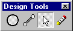

 The Design Tools palette is a free-floating toolbar that can be positioned anywhere in the Bridge Design Window. The Design Tools palette contains the following tools for creating and modifying your structural model:
To move the Design Tools palette to a new location, click and drag the Title Bar of the palette.
Unlike the other toolbars, the Design Tools palette cannot be docked on the top or bottom of the Bridge Design Window.